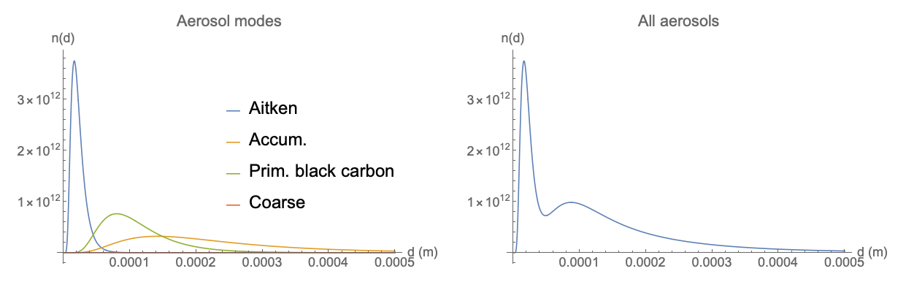

Aerosol Physics
Here we describe the physics of aerosols as represented by the modal aerosol model. First, we review the modal aerosol approximation, which defines the equations and quantites of interest and describes how various aerosol processes are parameterized. Then we describe in detail these various parameterized aerosol processes, their physical significance, and their mathematical represention. Along the way, we take care to highlight any physical, statistical, and mathematical assumptions, to make clear the circumstances under which Haero's aerosol model is valid.
The Modal Aerosol Approximation
Here we offer an extremely abbreviated "fly-over" of the evolution equations that quantify the dynamics of aerosols. Here, we emphasize the mathematical representation of aerosols. For a more detailed explanation of the underlying ideas, we refer the reader to~\cite{Whitby1991} and~\cite{Friedlander1977}.
All quantities are in SI units unless specifically mentioned. To keep the discussion simple and focused, we avoid referencing specific coordinates.
Many of the assumptions here are inherited from Dick Easter's Modal Aerosol Model 4-mode (MAM4) model.
Size Matters
The modal approach to modeling aerosols is based on the observations that
- the sizes of aerosol particles greatly influence their dynamical behavior
- these sizes span several orders of magnitude (from 0.001 to 100 microns)
Here, a "particle" is an individual aerosol molecule with some volume \(V_p\). Aerosol particles consist of polymers, and a particle consisting of a chain of \(i\) monomers is an \(i\)-mer.
How do we represent a set of aerosol particles in space, given the importance of their size? In the simplest case (for small \(i\)-mers), we can denote \(N_i(\vec{x}, t)\) as the number of \(i\)-mers per cubic meter in the vicinity of the point \(\vec{x}\) at time \(t\). In this language, the evolution equation is a set of coupled advection-diffusion-reaction (ADR) equations acting under the influence of a bulk velocity \(\vec{v}\):
Here we represent terms on the right hand side by
- \(\mathcal{D}\): terms related to {\it diffusion processes} for \(N_i\)
- \(\mathcal{R}\): terms related to {\it reaction processes}, in which various \(j\)-mers combine, react, and dissociate to form particles of other types
- \(\mathcal{S}\): terms related to {\it source and sink processes}, including external and prescribed sources of \(N_i\).
We describe the forms of these terms in Processes. The bulk velocity \(\vec{v}\) is supplied by some dynamical atmospheric model.
For larger \(i\)-mers (\(i > 100\)), the above description becomes inadequate, and we must adopt a description for particle numbers that admits a continuous number distribution in particle size space.
Let \(n(V_p, \vec{x}, t)\) be the number of particles of volume \(V_p\) occupying the point \(\vec{x}\) at time \(t\). Then the evolution of all \(i\)-mers is described by a single ADR equation:
where \(\mathcal{D}\), \(\mathcal{R}\), and \(\mathcal{S}\) have been expressed in terms of \(n\) instead of \(N_i\). This is a tidy equation, but \(n\) is a number distribution function that introduces a new dimension---the particle volume \(V_p\)---to the solution space. This makes it inconvenient for doing numerical calculations. In this description, \(n\) can assume any shape in particle volume space, which raises the question of how to constrain the solution in \(V_p\).
Moment Equations and the Closure Problem
We can reduce the size of our solution space by making a few assumptions:
Assumption
The detailed structure of the number distribution function \(n(V_p, \vec{x}, t)\) is unimportant to aerosol dynamics.
If we don't need to obtain the full solution for \(n\), we can select a specific functional form \(n(D_p, \vec{x}, t) = n(\vec{x}, t; D_p)\) for it. Then, taking cues from methods in particle kinetics and turbulence theory, we can integrate the product of \refeq{continuous_dndt} with powers of \(D_p\) to obtain the {\bf moment equations}
where \(\mathcal{M}_k(\vec{x}, t) = \int_0^{\infty} D_p^k n(\vec{x}, t; D_p) \d{D_p}\) is the ``\(k\)th moment'' of \(n\).
The moment equations are solved by picking a specific form of \(n\)'s functional dependence on \(D_p\) and playing tricks to avoid actually evaluating the above integrals. However, the moment equations aren't closed---the advection, diffusion, reaction, and source terms can all involve \(n\) and its spatial derivatives, and in general, the evolution of \(\mathcal{M}_k\) is coupled to higher moments. To make further progress, we must solve this {\bf closure problem}.
Modal Equations
Having already given up on obtaining a general solution for \(n(\vec{x}, t)\), we allow ourselves to make another assumption:
Modal assumption
The number distribution function \(n\) is the sum of a set of specific number distribution functions \(n_i\), each representing a {\bf mode} with a specific functional form for a sub-population of aerosol particles occupying a certain range in particle size space.
In other words,
where \(n_i\) represents aerosol particles with sizes falling within the range of mode \(i\) and \(M\) is the number of modes. Each mode assumes a specific functional form for \(n_i\) in terms of its relevant size as given by \(D_p\). We include the arguments \(\vec{x}\) and \(t\) to emphasize that this equation holds at each point in space and at each instant in time for an aerosol system.
Log-Normal Distribution Functions
Haero constructs its multi-modal distribution functions from log-normal probability distribution functions (PDFs) for each mode \(i\). The PDF for mode \(i\) expresses the fraction of aerosol particles present per unit size interval, in terms of a continuous particle diameter \(D_p\) within that mode. Such PDFs have been found to represent measured aerosol size distributions with a level of accuracy comparable to that of the relevant measurement techniques~\cite{Whitby1991}.
Log-normal PDF
The probability distribution function \(f_i\) used to construct the number distribution function \(n_i\) for mode \(i\) is a continuous function of the particle diameter \(D_p\), given as a log-normal distribution, \begin{equation}\label{log_normal_pdf} f_i(D_p) = \frac{1}{\sqrt{2\pi} D_p \ln \sigma_{g,i}} \ \exp \left [-\frac{(\ln D_p - \ln D_{g,i})^2}{2\ln^2 \sigma_{g,i}} \right] \end{equation} where we have introduced the geometric mean \(D_{g,i}\) and the geometric standard deviation \(\sigma_{g,i}\) of \(D_p\) within mode \(i\).
In general, these two parameters are determined for each mode via moment equations and corresponding time-evolution equations. Haero makes an additional simplifying assumption:
Constant standard deviation
The geometric standard deviation \(\sigma_{g,i}>1\) for each mode \(i\) is constant in time.
The justification for this assumption in \cite{Easter2004,Wilson2001,Whitby1991} is given in \cite{Whitby1981}.
This PDF can also be expressed in "logarithmic form" in terms of \(\ln D_p\) of \(D_p\):
Here, \(g_i\) is a normal distribution of \(\ln D_p\) with a mean of \(\ln D_{g,i}\) and standard deviation of \(\ln\sigma_{g,i}\).
These PDFs are referred to as {\bf normalized size distribution functions} in Haero. We can justify this name by multiplying each PDF by the total particle number density \(N_i\) for mode \(i\) to obtain the equivalent number distribution functions:

The logarithmic form \(\hat{n}_i\) is useful because of the relationship $ n_i(D_p) = \hat{n}_i(\ln D_p)/D_p$, which allows us to write
to simplify integrands involving number distribution functions. The benefit of this log-normal functional form choice is that the moment integrals can be defined analytically, obviating the need for potentially costly numerical quadrature \cite[eqns.~(3.7)]{Whitby1991}. The \(k\)th moment is given in this case by,
In particular,
Particle size
Particle size \(\overline{D_i}\) for the \(i\)th mode is defined by the mean diameter associated with the 3rd moment \cite[eqn.~(1)]{Whitby1981}, \begin{equation} \overline{D_i} = \left(M_3^{(i)}/N_i)\right)^{1/3} = D_{g,i}\exp\left(\frac{3}{2}\log^2\sigma_{g,i}\right) \end{equation}
Particles have spherical shapes
Aerosol particles are spherical, and their size can be parameterized by their diameter \(\overline{D_i}\). Corollaries for area and volume follow (\(\overline{A_i} = \pi\overline{D_i}^2\), \(\overline{V_i} = \frac{\pi}{6}\overline{D_i}^3\)).
When we adopt the log-normal assumption, we express our solution for particles in mode \(i\) in terms of its zeroth, first, second, and third moments \(\mathcal{M}_k^{(i)}(\vec{x}, t)\). These are, respectively:
- \(\mathcal{M}_0^{(i)} = N_i\), the total number of concentration for particles in mode \(i\)
- \(\mathcal{M}_1^{(i)} = N_i\overline{D}_i\), the number-weighted mean diameter of particles in mode \(i\)
- \(\mathcal{M}_2^{(i)} = \frac{1}{\pi}N_i\overline{A}_i\), a number-weighted surface area of particles in mode \(i\)
- \(\mathcal{M}_3^{(i)} = \frac{6}{\pi}N_i\overline{V}_i\), a number-weighted volume of particles in mode \(i\)
In this language, the aerosol evolution equation for the \(k\)th moment of the \(i\)th mode is
where the air temperature \(T\) and the air pressure \(p\) enter the moment equations, via right hand side terms in \ref{moments}. These are the modal equations.
Parmeterization assumption
The time evolution of a moment \(\mathcal{M}_k^{(i)}\) can be expressed in terms of the quantities \(N_i\), \(\overline{D}_i\), \(\overline{A}_i\), \(\overline{V}_i\), the air temperature \(T\), the pressure \(p\), and a few selected additional quantities.
2-moment scheme
Aerosol dynamics can be represented well by two moments, \(M_0^{(i)}\) and \(M_3^{(i)}\). We must find equations that describe the time evolution of \(M_0^{(i)}\) and \(M_3^{(i)}\) in terms of known E3SM variables.
Modal number concentrations \(N_m\) are defined and transported for each mode [# / kg air] as prognostic model variables (tracers). These are the \(\mathcal{M}_0\) moments for each mode, \ref{zero_moment}.
Mass mixing ratios \(q_{s,m}\) are defined for each species \(s\) in each mode \(m\) [ kg aerosol / kg air ] as prognostic model variables (tracers). Therefore, the third moments \(\mathcal{M}_3\) of each mode are found using the density of each aerosols species.
Volume mixing ratios are diagnosed by \(V_{s,m} = q_{s,m}/\rho_{s,m}\) [m\(^3\) aerosol / kg air], where \(\rho_{s,m}\) is the constant species density [kg aerosol / m\(^3\)].
Mode definitions in MAM4
The choices of size range and width for the modes in MAM are based on measurements of tropospheric aerosols (see~\cite{Easter2004} and references therein).
Here are the relevant parameters for MAM4, the 4-mode legacy MAM model.
| Mode | Lower bound of \(D\dsub{gn,d,i}\) | Upper bound of \(D\dsub{gn,d,i}\) | \(\sigma\dsub{g,i}\) | \(N_i(0)\) |
|---|---|---|---|---|
| Aitken | 0.0087 | 0.052 | 1.6 | 7.9031E7 |
| Accumulation | 0.0535 | 0.44 | 1.8 | 7.9697E7 |
| Coarse | 1.0 | 4.0 | 1.8 | 8.0361E7 |
| Primary carbon | 0.01 | 0.1 | 1.6 | 8.1022E7 |
Thus, in MAM, all modes have the same mathematical form, but the parameters are different for each mode.
Multi-Species Modes
We have derived the modal equations assuming that each mode contains a population of undifferentiated aerosol particles. We assume that each particle is composed of several (potentially different) chemical species:
Internally mixed
All aerosol species within a mode are assumed to be carried uniformly by all particles represented by the mode's log-normal distribution function, i.e., within each mode, particles are internally mixed.
Additive particle volume
Quantitatively, the internal mixing assumption implies that the volume of each individual particle is the sum of the volumes of its various constituents; in this case, the species within the mode.
These assumptions lead to the following modal averages.
Mode aerosol mass mixing ratio
The mass mixing ratio of species \(s\) in mode \(m\) is denoted by \(q_{sm}\). The mass mixing ration of the mode [kg aerosol / kg air] is then \begin{equation}\label{mode_mixing_ratio} q_{m} = \sum_{s\in m} q_{sm}. \end{equation}
Modally averaged aerosol density
The density of aerosol species \(s\) in mode \(m\) is denoted \(\rho_{sm}\). The average modal density [kg aerosol / m\(^3\) aerosol] is \begin{equation}\label{mode_density} \rho_m = \sum_{s\in m}q_{sm} \rho_{sm} \left(\sum_{s\in m} q_{sm}\right)^{-1} = \frac{\sum_{s\in m}q_{sm}\rho_{sm}}{q_m}. \end{equation}
Modally averaged hygroscopicity
The hygroscopicity of species \(s\) in mode \(m\) is denoted \(b_{sm}\). The mode-averaged hygroscopicity [-] is \begin{equation}\label{mode_hygro} b_m = \sum_{s\in m} \frac{q_{sm} b_{sm}}{\rho_{sm}}\left(\sum_{s\in m} \frac{q_{sm}}{\rho_{sm}}\right)^{-1}. \end{equation}
Modal mean particle volume
The per-particle mean volume for each mode \(m\) [m\(^3\)/particle] is \begin{equation}\label{mode_particle_volume} {V_{m}} = \frac{1}{N_m}\sum_{s\in m} \frac{q_{sm}}{\rho_{sm}}. \end{equation}
Modal geometric mean particle diameter
The geometric mean diameter of the particles in mode \(m\) [m] is \begin{equation}\label{mode_particle_diameter} {D_{m}} = \sqrt[3]{\frac{\pi}{6}{V_{Pm}}}\exp\left(-\frac{3}{2}\log^2 \sigma_m\right). \end{equation}